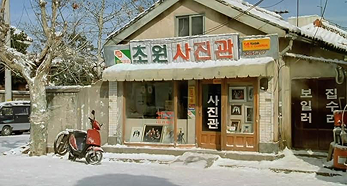
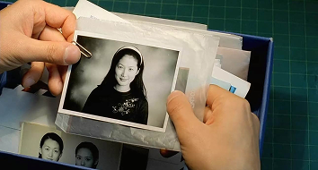

서울 변두리에서 작은 사진관을 운영하는 30대 중반의 정원(한석규)은 시한부 인생을 선고받은 상태다. 모든 것을 받아들인 그의 일상은 지극히 담담할 뿐이다. 그는 좋아하는 여학생 사진을 확대해달라고 아우성을 치는 중학생들, 젊은 시절의 사진을 복원해달라는 아주머니, 혼자 찾아와 쓸쓸히 영정 사진을 찍는 할머니 등, 소박한 이웃 속에서 일상을 계속하는 한편, 자신이 세상을 떠난 후 혼자 생활할 아버지(신구)를 위해 비디오 작동법을 적어두는 등 조용히 죽음을 준비한다. 하지만 어느 날 생기발랄한 주차단속원 다림(심은하)을 만난 후, 그는 미묘한 마음의 동요를 느낀다. 매일 비슷한 시간에 사진관 앞을 지나며 단속한 차량의 사진을 맡기는 다림. 필름을 넣어달라며 당돌하게 요구하기도 하고, 주차 단속 중에 있었던 불쾌한 일들을 털어놓기도 하는 그녀가 정원에겐 마냥 예쁘기만 하다. 다림과의 추억을 하나둘 쌓아가던 어느 날 정원은 결국 병원에 실려 가고, 이 사실을 모르는 다림은 늘 그랬듯 정원의 사진관을 찾지만 사진관 문은 오래도록 닫혀 있다. 정원이 세상을 떠난 후, 사진관 앞을 지나던 다림은 사진관에 걸린 자신의 사진을 보고 미소짓는다.